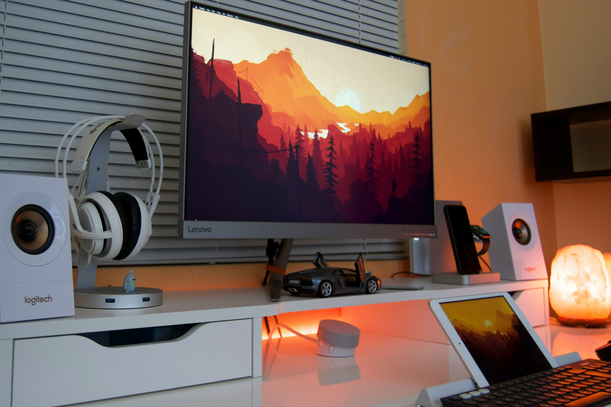

InvestigationIs Omoggle Actually AI? Developer Answers
Pablo Rogers revealed Omoggle uses computer vision and facial landmark analysis — not LLMs. Here's what that means for your score.
Latest news, streamer scores, looksmaxxing guides and deep-dives. Updated daily.
Pablo Rogers revealed Omoggle uses computer vision and facial landmark analysis — not LLMs. Here's what that means for your score.

Multiple clone sites (omoggle.app, omoggle.co, ommogle.com) appeared after the viral surge. Here's how to verify you're on the real one before granting camera access.

The complete 2026 Omoggle tier list now includes the "Adam" tier at 20,001+ ELO. All 9 ranks explained with ELO requirements and current occupancy.


May 5th: Twitch removed the ban on randomized video chat. Omoggle streams are now official.

Jesse's "you might be chopped!" while xQc lost his sixth round got 24K likes.

The face of looksmaxxing culture quit his stream live after getting out-scored.

Camera angle, lighting, background — these setup factors can raise your score by 1.5–2 points.

Complete beginner's guide — what to prioritize, what's proven, and what's pseudoscience.

Symmetry accounts for ~22% of your total score. Here's what it means and how to improve it.
How it works, who made it, the ELO system, and why it went viral on Twitch in 2026.

The 1–10 scale Omoggle uses as its backbone. What separates each tier from the next.
From Molecule to Slayer — ELO requirements, how rare each tier is, and the current leaderboard state.